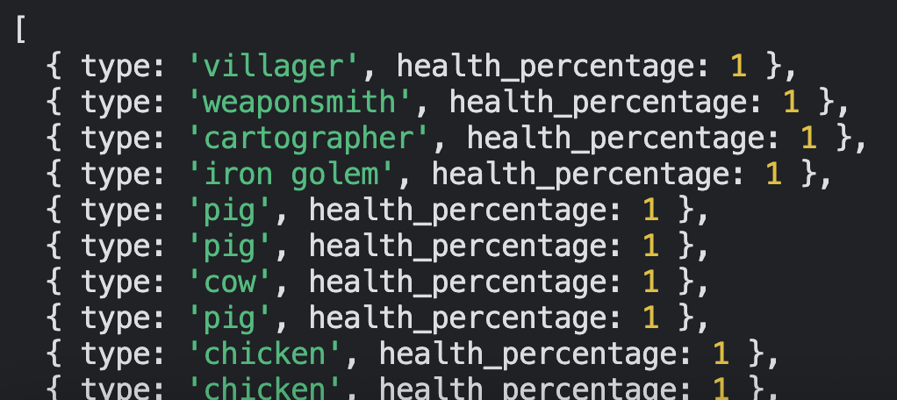

I'm working on a simulation of AI using utilitarian ethics within Minecraft. The goal is to create an "omnipotent" AI that has the ability to comprehend the Minecraft world, make plans to increase happiness, and execute those plans. I'm currently working on the comprehending the world part.
I am using percentage of max health as a proxy for utility in this case. A villager at 10 HP, meaning it has also taken 10 damage, would have a utility of 0.5. Summing up the utility of all the creatures in a village gives us the utility of that village.

To inform an AI on how to increase the utility of any given village, it needs more information about the world. I'm currently thinking about the information it needs in three prongs. One, is information about the inhabitants of the village itself.
This I've already implemented:

Second are the hazards surrounding the village. That is, blocks or environments which could harm the entities within the village. Things like lava, powdered snow, cactus, etc... I'd like to somehow keep track of cliffs and drops, but I'm not quite sure yet how I'm going to go about finding those. Additionally, there are a few hazardous entities such as zombies or pillagers which should also be included as part of the hazards.
Minecraft entities are already pretty good at avoiding damage, so I'm considering adding automatic damage every few minutes to all entities. This way the AI will struggle more to increase utility since a lack of action will lead to a decrease in utility. The main reason I'm considering this is to make the actions themselves more important and urgent, though it may be interesting to run a scenario with this setting active, and another with this setting disabled.
Lastly, after hazards, the AI should know of the resources around the village. Any surface ore veins, food, tree types, water, etc... Though the agent is "omnipotent" and won't need to manually collect these resources, it may be interesting to restrict the actions of the agent depending on the available resources. Something to consider.